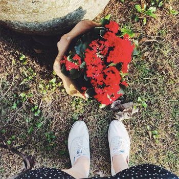

Sobre Mim
 Durante a faculdade, aprendi muito estagiando em uma empresa com foco em importação e distribuição de jóias, a Biwa. Fui responsável pela criação de anúncios e catálogos, tanto online como offline.
Mudei de ares em vista de novas vivências e maior gama de aprendizado, como o de ter a minha própria empresa. Dai surgiu a Marshmallow Pie, onde aprendi sobre funções técnicas e criativas necessárias para a otimização de uma empresa. Desenvolvi ilustrações e composições gráficas, e elaborei a impressão e a embalagem de canecas ao mesmo tempo em que divulguei a marca, sempre lidando próximo de fornecedores, clientes e parceiros.
Ao fim da faculdade, em 2014, me voltei para uma experiência, de trabalhar numa agência. Como parte da equipe de criação, com foco em mídia social, da agência Cappuccino Digital, descobri que prazos curtos e qualidade precisavam andar juntos. Após um tempo, senti a necessidade de operacionalizar técnicas e conceitos próprios; aprender fora da sala de aula e longe de uma empresa, profissionalmente e pessoalmente. Com um salto de coragem, me arrisquei em um intercâmbio em Edimburgo. Imersa em uma cultura distinta, conheci pessoas de inúmeros lugares - muitos dos quais jamais imaginei visitar - e me dei a liberdade de errar, me desesperar e, mais que tudo, me obriguei a treinar e falar o inglês de acordo com a melhor pronúncia que aprendi no dia a dia. Sem dúvidas, a melhor forma de aprendizado que poderia desejar em toda a vida. Evoluí do intermediário para o avançado em questão de poucos meses. Ainda que estivesse focada na absorção e aquisição da língua estrangeira, nunca deixei de criar - para mim e para amigos -, e cheguei até a ilustrar a capa de um livro. Entretanto, a saudades da família, do calor, da comida brasileira e de uma cachorrinha muito especial, pesaram muito na hora de decidir voltar para casa.
Assim que cheguei ao Brasil, a vontade de retomar o trabalho com criação em agências me perpassou grande motivação, porém era hora de buscar desafios que me tirariam da zona de conforto. Uma experiência inédita, pouco familiar, mas que instigasse. Me deparei com o User Interface Design, o fascínio foi tão grande que quis me aprofundar e me especializar. E, com isso, precisei correr de novo. Assisti a diversos tutoriais, busquei melhorar minhas habilidades de programação, e passei muitos dias quebrando a cabeça porque tinha esquecido de colocar uma aspa na linha de código. E todo esse esforço valeu a pena, fui contratada pela Chleba, onde posso criar muito daquilo que sonhei.
Isso não significa que parei; muito pelo contrário, continuo investigando atrás de novas paixões e desafios. Meu recém descoberto hobbie é explorar culturas diferentes a partir de suas línguas, seja com livros de histórias ou até por dicionários. O texto foi longo, mas, convenhamos, o caminho foi recheado de conhecimento e bagagem, e experiências não podem ser resumidas em algumas poucas palavras condensadas.
Curriculum Vitae